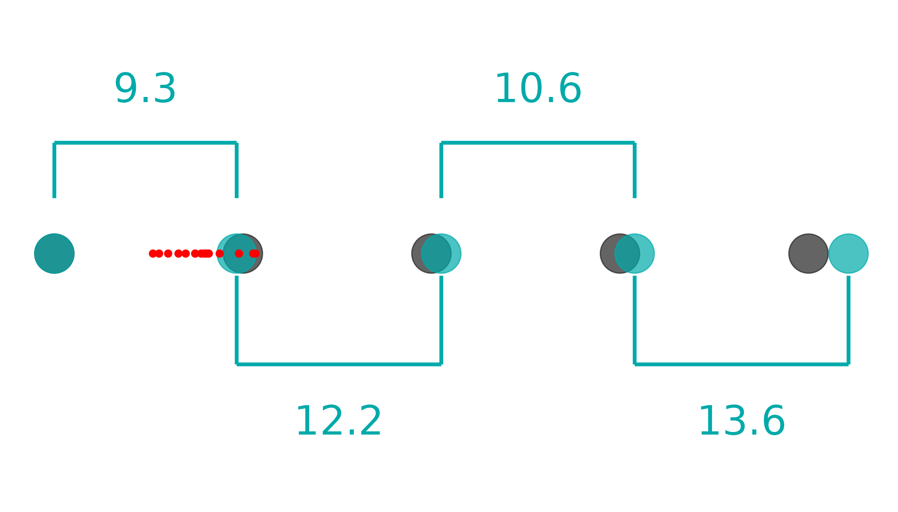
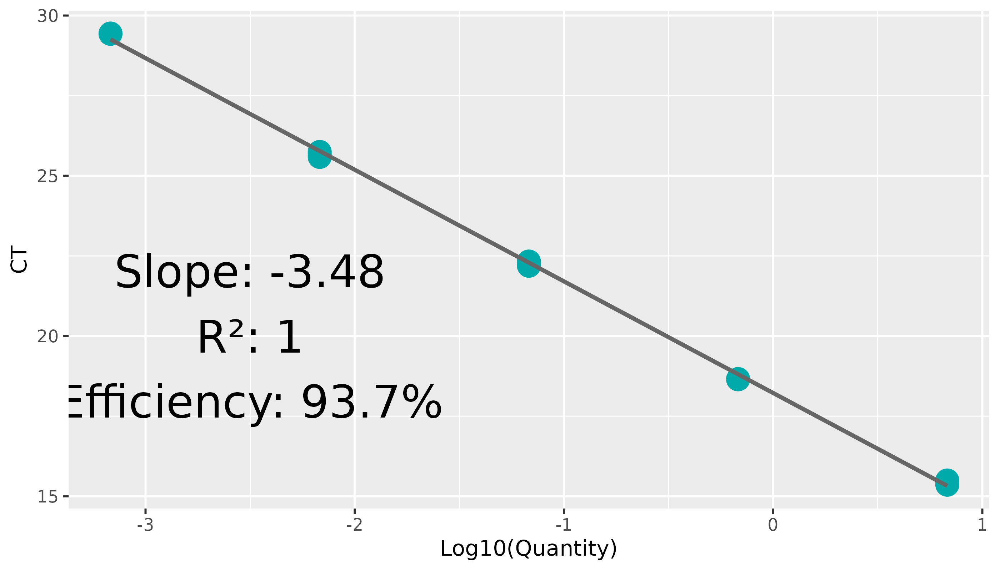
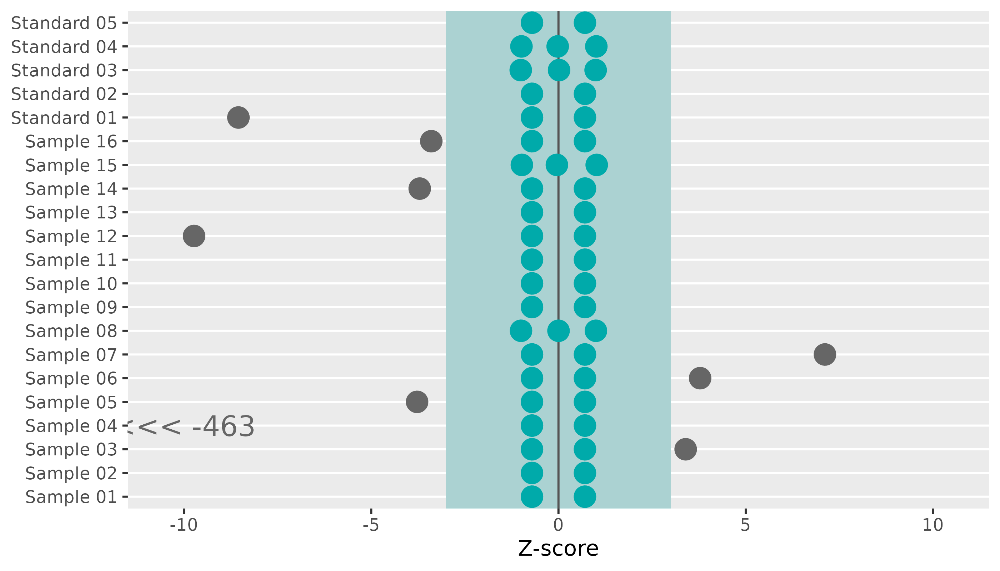
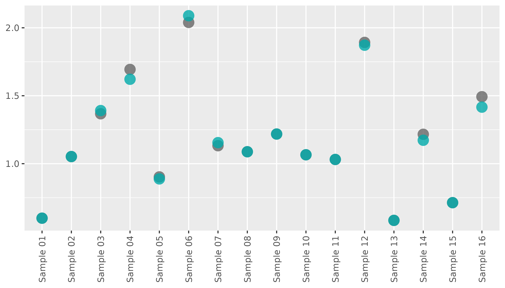

Performing Library Quantification QC
performing-lib-quant-qc.RmdIntroduction
When RNA libraries are generated, their absolute concentrations need to be established so they can be evenly loaded onto the chip with the correct concentration. In order to measure RNA library concentration, qPCR with a standard curve is performed. amplify offers several functions to both:
- Determine the quality of the assay and, if the assay went well,
- Determine the concentration of RNA libraries.
Reading and Tidying Data
amplify takes ‘results’ (.xls(x)) files exported from
QuantStudio. They can be read in with read_pcr and tidied
easily by providing a path to tidy_lab. We also add
pad_zero = TRUE, which changes the default value of, say
Sample 1 to Sample 01. This will help with out
plotting order down the line.
tidy_lib <- system.file("extdata", "untidy-standard-curve.xlsx", package = "amplify") |>
read_pcr() |>
tidy_lab(pad_zero = TRUE)
#>
#> ── Column specification ────────────────────────────────────────────────────────
#> cols(
#> .default = col_double(),
#> `Well Position` = col_character(),
#> Omit = col_logical(),
#> `Sample Name` = col_character(),
#> `Target Name` = col_character(),
#> Task = col_character(),
#> Reporter = col_character(),
#> Quencher = col_character(),
#> CT = col_character(),
#> `Automatic Ct Threshold` = col_logical(),
#> `Automatic Baseline` = col_logical(),
#> Comments = col_logical()
#> )
#> ℹ Use `spec()` for the full column specifications.
#> ! Multiple files in zip: reading ''[Content_Types].xml''
# scrub - from {mop} - turns an object into a data.frame
scrub(tidy_lib)
#> # A tibble: 96 × 32
#> .row .col well well_position omit sample_name target_name task reporter
#> <dbl> <dbl> <dbl> <chr> <lgl> <chr> <chr> <chr> <chr>
#> 1 1 1 1 A1 FALSE Standard 01 Target 1 STAND… FAM
#> 2 1 2 2 A2 FALSE Standard 01 Target 1 STAND… FAM
#> 3 1 3 3 A3 FALSE Standard 01 Target 1 STAND… FAM
#> 4 1 4 NA NA NA NA NA NA NA
#> 5 1 5 5 A5 FALSE Sample 01 Target 1 UNKNO… FAM
#> 6 1 6 6 A6 FALSE Sample 01 Target 1 UNKNO… FAM
#> 7 1 7 NA NA NA NA NA NA NA
#> 8 1 8 8 A8 FALSE Sample 09 Target 1 UNKNO… FAM
#> 9 1 9 9 A9 FALSE Sample 09 Target 1 UNKNO… FAM
#> 10 1 10 NA NA NA NA NA NA NA
#> # ℹ 86 more rows
#> # ℹ 23 more variables: quencher <chr>, ct <dbl>, ct_mean <dbl>, ct_sd <dbl>,
#> # quantity <dbl>, quantity_mean <dbl>, quantity_sd <dbl>,
#> # automatic_ct_threshold <lgl>, ct_threshold <dbl>, automatic_baseline <lgl>,
#> # baseline_start <dbl>, baseline_end <dbl>, comments <lgl>,
#> # y_intercept <dbl>, r_superscript_2 <dbl>, slope <dbl>, efficiency <dbl>,
#> # positions <dbl>, name <chr>, usr_quantity <dbl>, date <date>, …By default, pcr_tidy assumes you have a standards serial
dilution starting at 6.8, diluted by a factor of 10, going all the way
down to 0.00068, and that you want all of them. There are a couple
instances in which this might not be the case:
- You have a different serial dilution
- You want to remove some particularly heinous standards that will throw off slope calculation if included
In that instance, you would supply a numeric vector to the
usr_standards argument. If you wish to omit a given set of
standards, simply do not include them in this vector:
custom_lib <- system.file("extdata", "untidy-standard-curve.xlsx", package = "amplify") |>
read_pcr() |>
tidy_lab(pad_zero = TRUE, usr_standards = c(6.8, .68, .068, .0068))
#>
#> ── Column specification ────────────────────────────────────────────────────────
#> cols(
#> .default = col_double(),
#> `Well Position` = col_character(),
#> Omit = col_logical(),
#> `Sample Name` = col_character(),
#> `Target Name` = col_character(),
#> Task = col_character(),
#> Reporter = col_character(),
#> Quencher = col_character(),
#> CT = col_character(),
#> `Automatic Ct Threshold` = col_logical(),
#> `Automatic Baseline` = col_logical(),
#> Comments = col_logical()
#> )
#> ℹ Use `spec()` for the full column specifications.
#> ! Multiple files in zip: reading ''[Content_Types].xml''
#> 2 rows of standards did not have a matching value in 'standards' and have been dropped
scrub(custom_lib)
#> # A tibble: 96 × 32
#> .row .col well well_position omit sample_name target_name task reporter
#> <dbl> <dbl> <dbl> <chr> <lgl> <chr> <chr> <chr> <chr>
#> 1 1 1 1 A1 FALSE Standard 01 Target 1 STAND… FAM
#> 2 1 2 2 A2 FALSE Standard 01 Target 1 STAND… FAM
#> 3 1 3 3 A3 FALSE Standard 01 Target 1 STAND… FAM
#> 4 1 4 NA NA NA NA NA NA NA
#> 5 1 5 5 A5 FALSE Sample 01 Target 1 UNKNO… FAM
#> 6 1 6 6 A6 FALSE Sample 01 Target 1 UNKNO… FAM
#> 7 1 7 NA NA NA NA NA NA NA
#> 8 1 8 8 A8 FALSE Sample 09 Target 1 UNKNO… FAM
#> 9 1 9 9 A9 FALSE Sample 09 Target 1 UNKNO… FAM
#> 10 1 10 NA NA NA NA NA NA NA
#> # ℹ 86 more rows
#> # ℹ 23 more variables: quencher <chr>, ct <dbl>, ct_mean <dbl>, ct_sd <dbl>,
#> # quantity <dbl>, quantity_mean <dbl>, quantity_sd <dbl>,
#> # automatic_ct_threshold <lgl>, ct_threshold <dbl>, automatic_baseline <lgl>,
#> # baseline_start <dbl>, baseline_end <dbl>, comments <lgl>,
#> # y_intercept <dbl>, r_superscript_2 <dbl>, slope <dbl>, efficiency <dbl>,
#> # positions <dbl>, name <chr>, usr_quantity <dbl>, date <date>, …This will automatically update the slope column of the dataframe as
well. This can be called standalone (say, after manually removing a few
standards replicates from your dataset) by running
pcr_calc_slope
Calculating Library Concentration
Before we can perform quality control, we first need to calculate the concentration of RNA library in our samples. We supply a dilution factor to calculate the concentration of the original libraries from the concentration of libraries in the assay (here we diluted them 1:1000).
lib_conc <- tidy_lib |>
pcr_lib_calc(dil_factor = 1000)
lib_conc |>
scrub() |>
select(sample_name, concentration)
#> # A tibble: 96 × 2
#> sample_name concentration
#> <chr> <dbl>
#> 1 NA NA
#> 2 NA NA
#> 3 NA NA
#> 4 Standard 01 NA
#> 5 Standard 01 NA
#> 6 Standard 01 NA
#> 7 Standard 02 NA
#> 8 Standard 02 NA
#> 9 Standard 03 NA
#> 10 Standard 03 NA
#> # ℹ 86 more rowsGenerating Quality Control Data
Quality control metrics also need to be calculated. We can do this by
calling pcr_lib_qc on data output from
pcr_lib_calc:
lib_qc <- lib_conc |>
pcr_lib_qc()
lib_qc
#> $standards
#> # A tibble: 13 × 19
#> # Groups: sample_name [5]
#> sample_name task quantity_mean concentration quantity quant_actual dil
#> <chr> <chr> <dbl> <dbl> <dbl> <dbl> <dbl>
#> 1 Standard 01 STANDARD NA NA 6.80 6.80 0
#> 2 Standard 01 STANDARD NA NA 6.80 6.80 0
#> 3 Standard 01 STANDARD NA NA 6.80 6.80 0
#> 4 Standard 02 STANDARD NA NA 0.680 0.734 9.27
#> 5 Standard 02 STANDARD NA NA 0.680 0.734 9.27
#> 6 Standard 03 STANDARD NA NA 0.0680 0.0603 12.2
#> 7 Standard 03 STANDARD NA NA 0.0680 0.0603 12.2
#> 8 Standard 03 STANDARD NA NA 0.0680 0.0603 12.2
#> 9 Standard 04 STANDARD NA NA 0.00680 0.00568 10.6
#> 10 Standard 04 STANDARD NA NA 0.00680 0.00568 10.6
#> 11 Standard 04 STANDARD NA NA 0.00680 0.00568 10.6
#> 12 Standard 05 STANDARD NA NA 0.000680 0.000417 13.6
#> 13 Standard 05 STANDARD NA NA 0.000680 0.000417 13.6
#> # ℹ 12 more variables: slope <dbl>, efficiency <dbl>, r_superscript_2 <dbl>,
#> # ct <dbl>, no_po_mean <dbl>, no_po_sd <dbl>, keep <lgl>, keep_temp <lgl>,
#> # mean_adj <dbl>, sd_adj <dbl>, quant_adj <dbl>, z <dbl>
#>
#> $samples
#> # A tibble: 42 × 19
#> # Groups: sample_name [16]
#> sample_name task quantity_mean concentration quantity quant_actual dil
#> <chr> <chr> <dbl> <dbl> <dbl> <dbl> <dbl>
#> 1 Sample 06 UNKNOWN 2.04 2039. 2.06 2.06 NA
#> 2 Sample 06 UNKNOWN 2.04 2039. 2.12 2.12 NA
#> 3 Sample 06 UNKNOWN 2.04 2039. 1.94 1.94 NA
#> 4 Sample 12 UNKNOWN 1.89 1893. 1.93 1.93 NA
#> 5 Sample 12 UNKNOWN 1.89 1893. 1.88 1.88 NA
#> 6 Sample 12 UNKNOWN 1.89 1893. 1.87 1.87 NA
#> 7 Sample 04 UNKNOWN 1.69 1694. 1.62 1.62 NA
#> 8 Sample 04 UNKNOWN 1.69 1694. 1.84 1.84 NA
#> 9 Sample 04 UNKNOWN 1.69 1694. 1.62 1.62 NA
#> 10 Sample 16 UNKNOWN 1.49 1493. 1.46 1.46 NA
#> # ℹ 32 more rows
#> # ℹ 12 more variables: slope <dbl>, efficiency <dbl>, r_superscript_2 <dbl>,
#> # ct <dbl>, no_po_mean <dbl>, no_po_sd <dbl>, keep <lgl>, keep_temp <lgl>,
#> # mean_adj <dbl>, sd_adj <dbl>, quant_adj <dbl>, z <dbl>
#>
#> $sample_summary
#> # A tibble: 16 × 3
#> sample_name quantity_mean quant_adj
#> <chr> <dbl> <dbl>
#> 1 Sample 01 0.599 0.599
#> 2 Sample 02 1.05 1.05
#> 3 Sample 03 1.37 1.39
#> 4 Sample 04 1.69 1.62
#> 5 Sample 05 0.903 0.888
#> 6 Sample 06 2.04 2.09
#> 7 Sample 07 1.13 1.15
#> 8 Sample 08 1.09 1.09
#> 9 Sample 09 1.22 1.22
#> 10 Sample 10 1.07 1.07
#> 11 Sample 11 1.03 1.03
#> 12 Sample 12 1.89 1.87
#> 13 Sample 13 0.583 0.583
#> 14 Sample 14 1.22 1.17
#> 15 Sample 15 0.713 0.713
#> 16 Sample 16 1.49 1.42
#>
#> $standard_summary
#> # A tibble: 5 × 4
#> sample_name dil quantity_mean quant_actual
#> <chr> <dbl> <dbl> <dbl>
#> 1 Standard 01 0 6.80 6.80
#> 2 Standard 02 9.27 0.680 0.734
#> 3 Standard 03 12.2 0.0680 0.0603
#> 4 Standard 04 10.6 0.00680 0.00568
#> 5 Standard 05 13.6 0.000680 0.000417
#>
#> $outliers
#> # A tibble: 55 × 19
#> # Groups: sample_name [21]
#> sample_name task quantity_mean concentration quantity quant_actual dil
#> <chr> <chr> <dbl> <dbl> <dbl> <dbl> <dbl>
#> 1 Standard 01 STANDARD NA NA 6.80 6.80 0
#> 2 Standard 01 STANDARD NA NA 6.80 6.80 0
#> 3 Standard 01 STANDARD NA NA 6.80 6.80 0
#> 4 Standard 02 STANDARD NA NA 0.680 0.734 9.27
#> 5 Standard 02 STANDARD NA NA 0.680 0.734 9.27
#> 6 Standard 03 STANDARD NA NA 0.0680 0.0603 12.2
#> 7 Standard 03 STANDARD NA NA 0.0680 0.0603 12.2
#> 8 Standard 03 STANDARD NA NA 0.0680 0.0603 12.2
#> 9 Standard 04 STANDARD NA NA 0.00680 0.00568 10.6
#> 10 Standard 04 STANDARD NA NA 0.00680 0.00568 10.6
#> # ℹ 45 more rows
#> # ℹ 12 more variables: slope <dbl>, efficiency <dbl>, r_superscript_2 <dbl>,
#> # ct <dbl>, no_po_mean <dbl>, no_po_sd <dbl>, keep <lgl>, keep_temp <lgl>,
#> # mean_adj <dbl>, sd_adj <dbl>, quant_adj <dbl>, z <dbl>This output is generally not useful by itself. Using
pcr_lib_qc_plot_* functions on it, however, generates plots
that display valuable visual QC summaries
Standard Dilution Plot
Making standard curve for libraries requires making a serial dilution of standards. It is important we determine that this serial dilution was diluted properly, or the results calculated from it will be unreliable. The standard dilution plot helps with this:
lib_qc |>
pcr_lib_qc_plot_dil()
From this plot, we can see the relative dilution factors between samples. From this example, we can see a 9.3x dilution between the first and second, 12.2x dilution between second and third, etc. They gray dots represent where our blue dots should land if all the dilutions are perfect AND if efficiency is 100%. The red dots represent where the samples lie.
This plot can catch three sources of issues:
- Inconsistent pipetting, which would show dilution factors widely varying from 10x or
- Systematically incorrect pipetting, which would show dilutions consistently below or above 10x or
- Poor efficiency of the enzyme, which would appear to show dilutions consistently above 10x.
Determining efficiency issues vs consistently under-pipetting is impossible to determine with the data alone. Ensure you have calibrated pipettes and are practicing proper pipetting techniques to ensure not only consistent, but accurate volumes.
Standard Slope Plot
lib_qc |>
pcr_lib_qc_plot_slope()
In this plot, the log10 of the theoretical values of the standards is plotted against the Ct values of the standards. In a perfect world, we would expect that a standard 1/10th of the concentration would reach the same level of amplification in around 3.3 cycles. Why? Because in a perfect world, we expect perfect doubling of the product. .
Thus, in a perfect world we expect to see a slope of -3.3, an of 1, and an efficiency of 100%.
Things are rarely perfect, however. 100% efficiency is an upper bound. Therefore, an efficiency >80% is considered acceptable.
If there is an outlier in your standards it may make the efficiency artificially low or high. In some cases you can remove those standards and recalculate the slope to still get accurate concentrations, without having to redo the qPCR run:
- Standards much more dilute than your sample concentrations are outliers
- A technical replicate of a standard is an outlier
One instances in which it is not recommended to simply remove the outliers: when standards that are within the range or above your sample concentrations. This is because a poor dilution done upstream of your samples will affect all concentrations downstream, making accurate determination of absolute library concentration impossible. If you are ever in doubt, you should probably bite the bullet and redo the qPCR.
Plot Outliers
lib_qc |>
pcr_lib_qc_plot_outliers()
#> Warning: Removed 54 rows containing missing values or values outside the scale range
#> (`geom_text()`).
#> Warning: Removed 1 row containing missing values or values outside the scale range
#> (`geom_point()`).
It’s often best to remove technical replicate outliers in order to
obtain an accurate estimate of concentration. A point is deemed an
outlier if it is >3Z away from the mean of the other two. Shown
above, the outliers are in gray, and the zone of inclusion is in blue.
Particularly egregious outliers are shown with (<<<) or
(>>>) and the number of standard deviations away they are. In
the instance above, 463Z away! New estimates, sans these outliers, are
found in the quant_adj column of
sample_summary:
lib_qc$sample_summary
#> # A tibble: 16 × 3
#> sample_name quantity_mean quant_adj
#> <chr> <dbl> <dbl>
#> 1 Sample 01 0.599 0.599
#> 2 Sample 02 1.05 1.05
#> 3 Sample 03 1.37 1.39
#> 4 Sample 04 1.69 1.62
#> 5 Sample 05 0.903 0.888
#> 6 Sample 06 2.04 2.09
#> 7 Sample 07 1.13 1.15
#> 8 Sample 08 1.09 1.09
#> 9 Sample 09 1.22 1.22
#> 10 Sample 10 1.07 1.07
#> 11 Sample 11 1.03 1.03
#> 12 Sample 12 1.89 1.87
#> 13 Sample 13 0.583 0.583
#> 14 Sample 14 1.22 1.17
#> 15 Sample 15 0.713 0.713
#> 16 Sample 16 1.49 1.42These can be visualized using pcr_lib_qc_conc:
lib_qc |>
pcr_lib_qc_plot_conc() This plot shows the unadjusted concentrations in gray, and the concentrations after outlier removal in blue.
A full HTML report can be produced by running
pcr_lib_qc_report:
lib_qc |>
amplify::pcr_lib_qc_report("path/to/file.html")